Transformations
Translation
A translation is a type of transformation that moves every point of a shape by the same distance in the same direction. The shape is slid from one position to another without being rotated, reflected, or resized. The original shape is called the object, and the shape after translation is called the image.
Key Properties of a Translation:
• The shape does not change size or orientation.
• Every point moves the same distance in the same direction.
• The object and the image are congruent (identical in shape and size).
Labelling Vertices in Transformations
When performing transformations, it is important to label vertices correctly to show corresponding points:
- Vertices on the object (original shape) are labelled A, B, C, etc.
- Vertices on the image (after the first transformation) are labelled A', B', C', etc. (read as "A prime", "B prime")
- If there is a second transformation, the new vertices become A", B", C", etc. (read as "A double prime", "B double prime")
The Translation Vector
A translation is described by a column vector in the form:
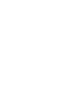
Where:
- x represents the horizontal movement (positive = right, negative = left)
- y represents the vertical movement (positive = up, negative = down)
Translating a Shape
A triangle has vertices at A(1, 1), B(3, 1), and C(2, 3). Translate the triangle using the translation vector .
Step 1: Plot the original triangle (object).
Step 2: Add the translation vector to each vertex.
Calculations:
A → = A'
B → = B'
C → = C'
Step 3: Plot the image points and join them to form the translated triangle.
Answer: The image has vertices at A' , B' , and C' .
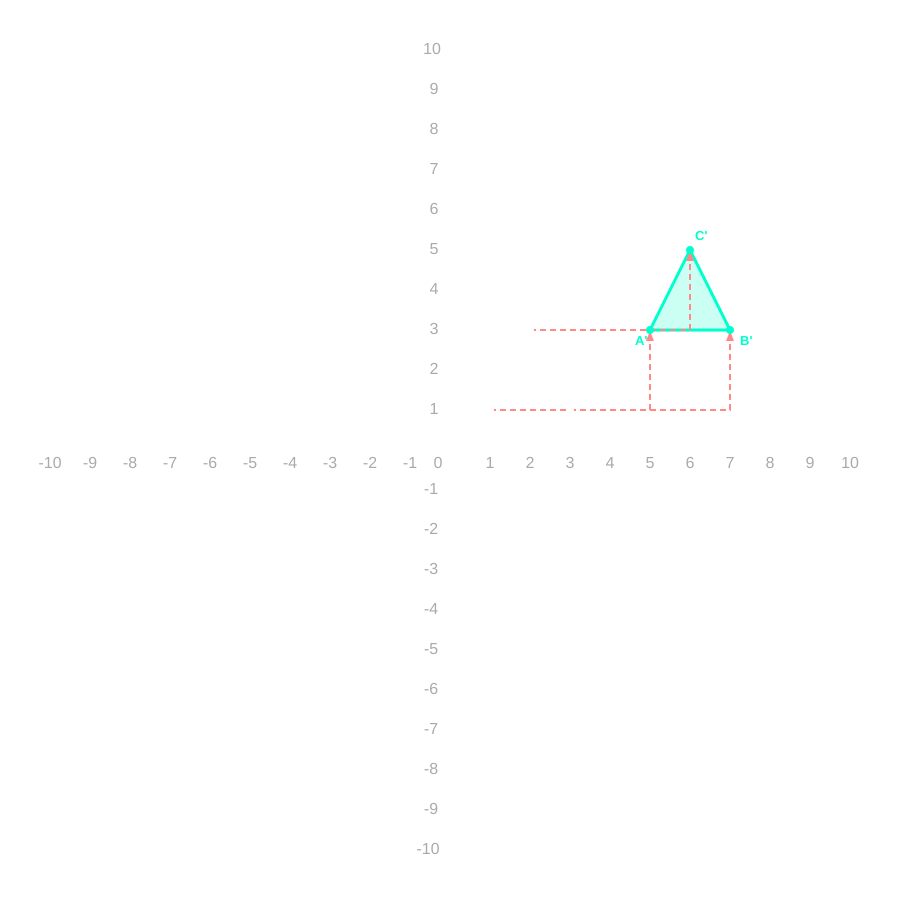
Translating with a Negative Vector
Translate the same triangle using the translation vector .
Step 1: Plot the original triangle (object).
Step 2: Add the translation vector to each vertex.
Calculations:
A → = A''
B → = B''
C → = C''
Step 3: Plot the image points and join them to form the translated triangle.
Answer: The image has vertices at A'' , B'' , and C'' .
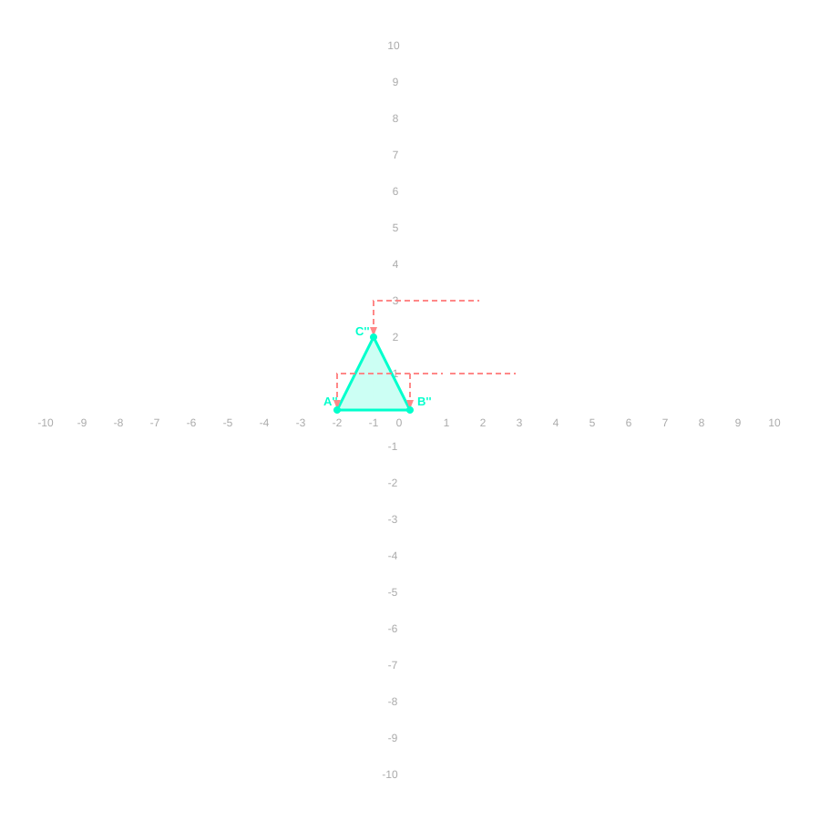
Describing a Translation
To describe a translation from an object to its image, find the movement of one corresponding point from the object to the image. The translation vector is written as a column vector.
Steps to Describe a Translation:
1. Choose a point on the object and its corresponding point on the image.
2. Calculate the horizontal change (x₂ - x₁).
3. Calculate the vertical change (y₂ - y₁).
4. Write the translation as a column vector .
Example
The diagram below shows two triangles, labelled ABC and A'B'C'. Describe fully the transformation that maps triangle ABC onto triangle A'B'C'.
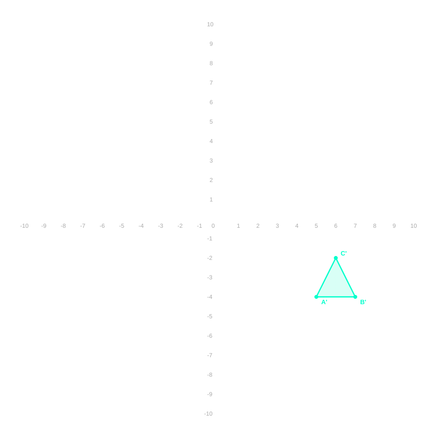
Solution:
Step 1: Identify the type of transformation.
The shape has been slid from one position to another. It has not been rotated, reflected, or resized. Therefore, the transformation is a translation.
Step 2: Find the horizontal and vertical movement.
Choose a corresponding point, for example C(2, 3) and C'(6, -2).
Horizontal change: 6 - 2 = 4 (4 units to the RIGHT)
Vertical change: -2 - 3 = -5 (5 units DOWN)
Step 3: Write the translation as a column vector.
Answer: The transformation is a translation by the vector .
NB: To describe a transformation, always state the type of transformation, and the details (e.g., translation vector)
Reflection
A reflection is a transformation that produces a mirror image of a shape across a fixed line called the mirror line (or line of reflection). The reflected image is the same shape and size as the original object, but it has been "flipped" across the mirror line to a new position and orientation.
Key Properties of a Reflection:
• The shape does not change size (congruent).
• The orientation is reversed (flipped).
• Points on the mirror line stay fixed (do not move).
• The perpendicular distance from any point on the object to the mirror line equals the perpendicular distance from the corresponding point on the image to the mirror line.
Reflection in the x-axis (y = 0)
When reflecting a shape in the x-axis, the x-coordinate stays the same, while the y-coordinate changes sign.
(x, y) → (x, -y)
For example, triangle ABC has the following coordinates:
A(1, 3),
B(3, 3),
C(2, 5),
while its mirror image, triangle A'B'C'
has the following coordinates:
A'(1, -3),
B'(3, -3),
C'(2, -5).
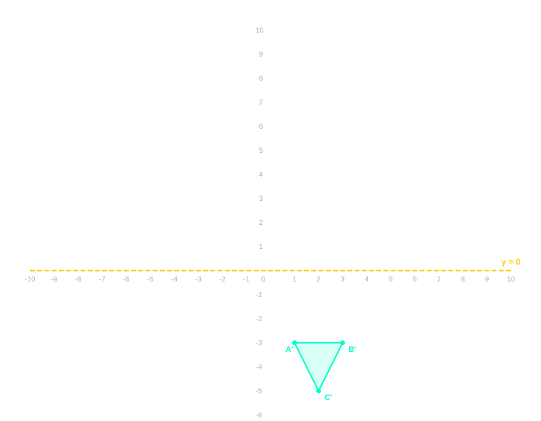
Reflection in the y-axis (x = 0)
When reflecting a shape in the y-axis, the y-coordinate stays the same, while the x-coordinate changes sign.
(x, y) → (-x, y)
For example, triangle ABC has the following coordinates:
A(4, 3),
B(6, 3),
C(5, 5),
while its mirror image, triangle A'B'C'
has the following coordinates:
A'(-4, 3),
B'(-6, 3),
C'(-5, 5),
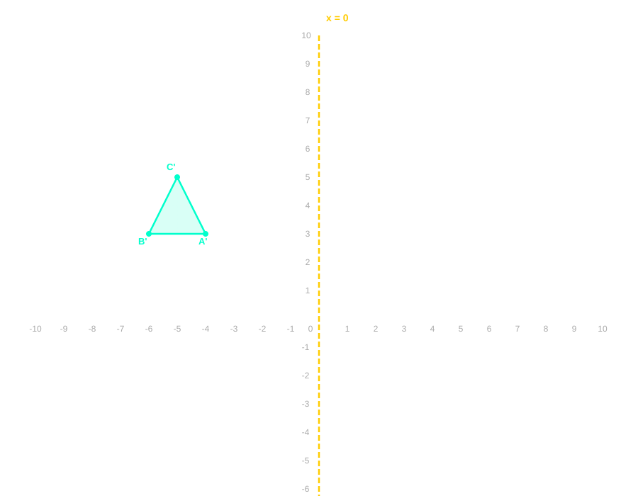
Reflecting Across Lines Parallel to the Axes
When reflecting across a vertical line x = k (where k is a constant), the y-coordinate stays the same. The x-coordinate changes according to the formula:
(x, y) → (2k - x, y)
For example, triangle ABC has the following coordinates:
A(3, 3),
B(5, 3),
C(4, 5),
while its mirror image, triangle A'B'C'
has the following coordinates:
A'(1, 3),
B'(-1, 3),
C'(0, 5).
Calculating the x values:
A(2 × 2 - 3) = A'x(1)
B(2 × 2 - 5) = B'x(-1)
C(2 × 2 - 4) = C'x(0)
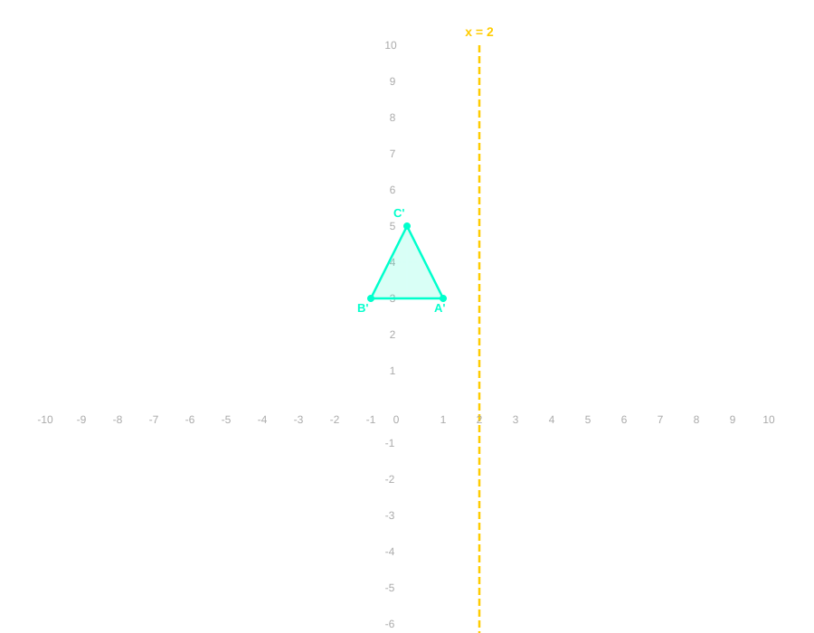
When reflecting across a horizontal line y = k (where k is a constant), the x-coordinate stays the same. The y-coordinate changes according to the formula:
(x, y) → (x, 2k - y)
For example, triangle ABC has the following coordinates:
A(3, 4),
B(5, 4),
C(4, 6),
while its mirror image, triangle A'B'C'
has the following coordinates:
A'(3, 0),
B'(5, 0),
C'(4, -2).
Calculating the y values:
A(2 × 2 - 4) = A'y(0)
B(2 × 2 - 4) = B'y(0)
C(2 × 2 - 6) = C'y(-2)
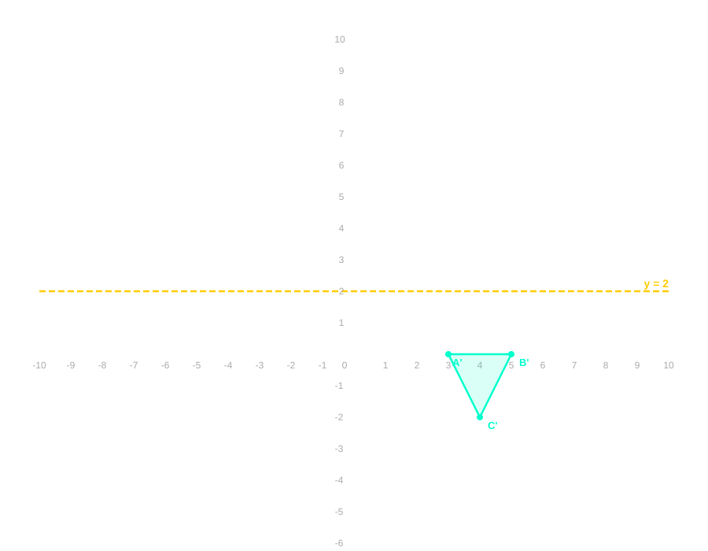
The diagram below shows triangle ABC and its image triangle A'B'C'. Describe fully the single transformation that maps triangle ABC onto triangle A'B'C'.
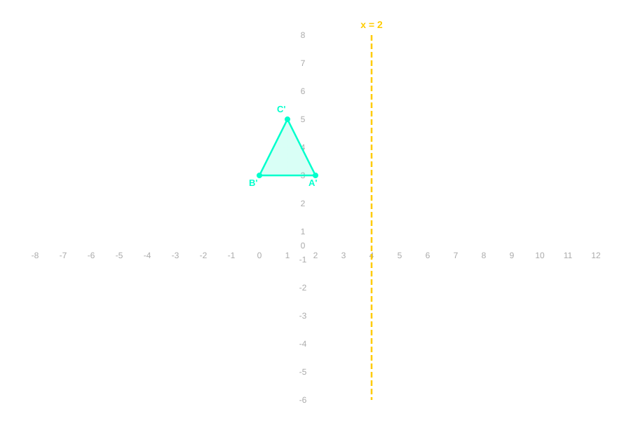
Solution:
Step 1: Identify the type of transformation.
The shape has been flipped over a line. It has not been turned (rotated), slid (translated), or resized (enlarged). Therefore, the transformation is a reflection.
Step 2: Find the mirror line.
The mirror line is the perpendicular bisector of the line joining any corresponding point and its image. Using point C(5, 7) and C'(-1, 7):
The y-coordinates are the same (7), so the mirror line is vertical.
The midpoint is x = (5 + (-1)) ÷ 2 = 4 ÷ 2 = 2.
Therefore, the mirror line is x = 2.
Answer: The transformation is a reflection in the line x = 2.
NB: When describing a reflection, you must state:
1. That it is a reflection (the type of transformation)
2. The equation of the mirror line (e.g., x = 2, y = 0, y = x)
Rotation
A rotation is a transformation that turns every point of a shape through the same angle about a fixed point called the centre of rotation. The image produced is congruent to the original but its orientation changes.
Key Properties of a Rotation:
• The shape does not change size (it is congruent to the original).
• Every point turns through the same angle about the centre of rotation.
• The distance from the centre to any point on the shape stays the same.
• The oreintation of the shape changes as the object turns.
• The centre of rotation is the only invariant point (it does not move).
Describing a rotation fully
To fully describe any rotation you must state four things:
- Type of transformation: that it is a rotation
- Centre of rotation: given as coordinates, e.g(0,0) 0r (2, -1)
- Angle of rotation: 90°, 180°, 270°, etc.
- Direction: clockwise or anticlockwise
Rotation Rules (about the origin)
When the centre of rotation is the origin (0,0), a simple coordinate rule applies to every vertex of the shape:
Rotating a point by 90° anticlockwise swaps the coordinates and negates the new x-value: (x, y) → (−y, x). Each further 90° turn applies the same swap again. After 180° both values negate; after 270° anticlockwise you get (y, −x), which is the same as 90° clockwise.
Rotating about the origin
Triangle PQR rotated 90° clockwise about the origin → P'Q'R'
WORKED EXAMPLE: ROTATION ABOUT THE ORIGIN
Triangle PQR has vertices P(2, 3), Q(4, 1) and R(1, 1). Rotate it 90° clockwise about the origin. Find the image coordinates.
Rule for 90° clockwise: (x, y) → (y, −x)
Rotation about a vertex (centre on the shape)
When the centre of rotation is a vertex of the shape itself, that point stays fixed while every other point turns around it. This is a common exam scenario.
The coordinate rule still applies; but you must first work relative to the centre, apply the rule, then shift back.
Step-by-step method for any centre (a, b)
- Subtract the centre coordinates from every vertex: (x − a, y − b)
- Apply the rotation rule for the given angle and direction.
- Add the centre coordinates back: (result_x + a, result_y + b).
Worked example: rotation about a vertex
Triangle ABC has vertices A(2, 4), B(4, 4) and C(3, 1). Rotate it 90° anticlockwise about point C(3, 1).
Ponit A
Rule for 90° anticlockwise: (x, y) → (−y, x)
A(2, 4)Relative to C(3,1): (2−3, 4−1) = (−1, 3)
Apply rule(−1, 3) → (−3, −1)
Add C back(−3+3, −1+1) = A′(0, 0)
Point B
Rule for 90° anticlockwise: (x, y) → (−y, x)
B(4, 4)Relative to C(3,1): (4−3, 4−1) = (1, 3)
Apply rule(1, 3) → (−3, 1)
Add C back(−3+3, 1+1) = B′(0, 2)
C stays fixed as the centre of rotation → C′(3, 1).
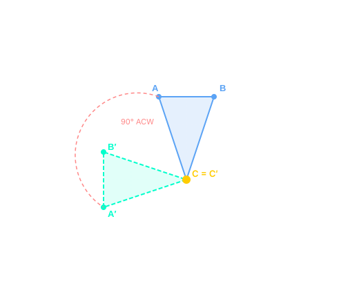
Exploring rotation through different angles
The diagram below shows how the same triangle looks after rotations of 90°, 180° and 270° anticlockwise about the origin, so you can compare the orientations side by side.
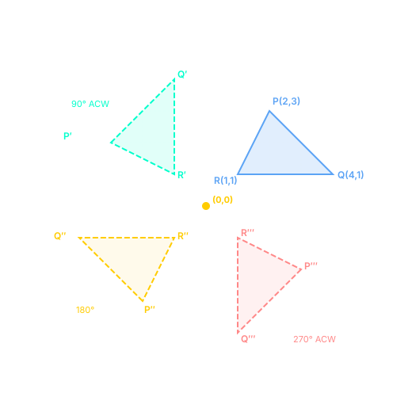
Comparing orientations: Notice that each successive 90° rotation moves the triangle one quadrant anticlockwise. After 180°, every point is directly opposite the origin from where it started. After 270° ACW, the shape is in the same position as it would be after 90° CW, the two are equivalent.
Finding the centre of rotation by construction
If you are given an object and its image and must find the centre of rotation, use perpendicular bisectors.
- Join a vertex on the object to its corresponding image vertex (e.g. A to A′).
- Construct the perpendicular bisector of that line segment.
- Repeat for a second pair of corresponding vertices (e.g. B to B′).
- The point where the two bisectors intersect is the centre of rotation.
To find the angle of rotation: measure the angle from the centre to any vertex and to its image, using a protractor or by calculation.
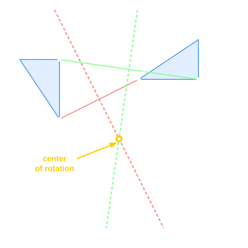
How to find the angle and direction once you have the centre
Join the centre to any vertex (e.g. centre to A), and join the centre to its image (centre to A′). The angle between these two line segments is the angle of rotation. Use the direction the shape has turned to state whether it is clockwise or anticlockwise.
Enlargement
An enlargement is a transformation that changes the size of a shape by a given scale factor from a fixed point called the centre of enlargement. Unlike translation, reflection, and rotation, enlargement is not an isometric transformation. The image is usually a different size from the object. However, the shape and its image are always similar (same shape, all angles equal, sides in proportion).
Key Properties of Enlargement:
• All angles in the image are equal to the corresponding angles in the object.
• All corresponding sides are in the same ratio, the scale factor.
• Lines joining corresponding vertices, when extended, all pass through the centre of enlargement.
• The object and image are similar (but only congruent when the scale factor is ±1).
Discovering Enlargement using Corresponding Sides
To understand enlargement, first explore the relationship between the corresponding sides of an object and its image. Consider the two triangles below:
Object triangle ABC has vertices A(1, 1), B(3, 1) and C(1, 3).
Image triangle A'B'C' has vertices A'(1, 1), B'(5, 1) and C'(1, 5).
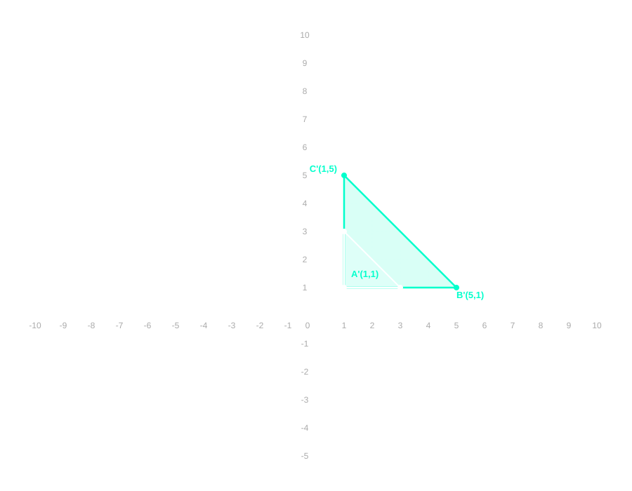
Measure and compare corresponding sides:
Comparing side lengths:
AB = 2 units → A'B' = 4 units → ratio = 4 ÷ 2 = 2
AC = 2 units → A'C' = 4 units → ratio = 4 ÷ 2 = 2
BC = 2√2 units → B'C' = 4√2 units → ratio = 4√2 ÷ 2√2 = 2
Every pair of corresponding sides is in the ratio 2 : 1. The scale factor is 2.
Finding the Centre of Enlargement
To find the centre of enlargement, join corresponding vertices with straight lines and extend them. All such lines intersect at a single point, the centre of enlargement.
In the diagram below, triangle ABC (white) has been enlarged to triangle A'B'C' (cyan). The side lengths are:
- Object triangle ABC: 2 cm, 2 cm, 2√2 cm (right-angled isosceles triangle)
- Image triangle A'B'C': 4 cm, 4 cm, 4√2 cm
The scale factor is k = 2 because every side of the image is twice the corresponding side of the object.
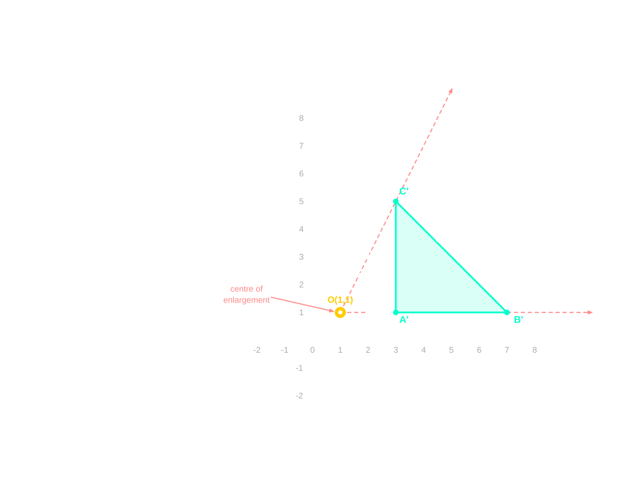
Notice that the three red dashed rays, drawn from the centre O through each vertex of the object, pass exactly through the corresponding vertex of the image. This is always the case: the centre of enlargement lies on every ray connecting corresponding vertices.
Deducing the Scale Factor and Centre
Once you have joined corresponding vertices and found the intersection point (the centre), the scale factor is found by measuring distances from the centre:
Using the example above, with centre O(1, 1):
OA = distance from O(1,1) to A(2,1) = 1 unit
OA' = distance from O(1,1) to A'(3,1) = 2 units
Scale factor = OA' ÷ OA = 2 ÷ 1 = 2
OB = distance from O(1,1) to B(4,1) = 3 units
OB' = distance from O(1,1) to B'(7,1) = 6 units
Scale factor = 6 ÷ 3 = 2
OC = distance from O(1,1) to C(2,3) = √(1² + 2²) = √5 units
OC' = distance from O(1,1) to C'(3,5) = √(2² + 4²) = √20 = 2√5 units
Scale factor = 2√5 ÷ √5 = 2
The corresponding side lengths confirm the scale factor:
A'B' = 4 cm, AB = 2 cm → ratio = 4 ÷ 2 = 2
A'C' = 4 cm, AC = 2 cm → ratio = 4 ÷ 2 = 2
B'C' = 4√2 cm, BC = 2√2 cm → ratio = 4√2 ÷ 2√2 = 2
Positive Scale Factor
When the scale factor k > 0, the image appears on the same side of the centre of enlargement as the object. The image is upright relative to the object.
- If k > 1, the image is larger than the object.
- If k = 1, the image is the same size and position as the object (no change).
- If 0 < k < 1, the image is smaller than the object (fractional scale factor).
To enlarge a shape by scale factor k from centre O:
- Draw a ray from O through each vertex of the object.
- Measure the distance from O to each vertex.
- Multiply that distance by k to get the distance from O to the image vertex.
- Mark the image vertex on the same ray, at the new distance from O.
- Join the image vertices to complete the image shape.
Example 1: Triangle ABC has vertices A(1, 2), B(3, 2) and C(1, 4). Enlarge it by scale factor 3, centre O(0, 0).
Solution:
Each image vertex = k × (object vertex − O) + O. Since O = (0,0): image vertex = 3 × object vertex.
A(1, 2) → A'(3 × 1, 3 × 2) = A'(3, 6)
B(3, 2) → B'(3 × 3, 3 × 2) = B'(9, 6)
C(1, 4) → C'(3 × 1, 3 × 4) = C'(3, 12)
Answer: Image vertices: A'(3, 6), B'(9, 6), C'(3, 12).
Each side of the image is 3 times the corresponding side of the object.
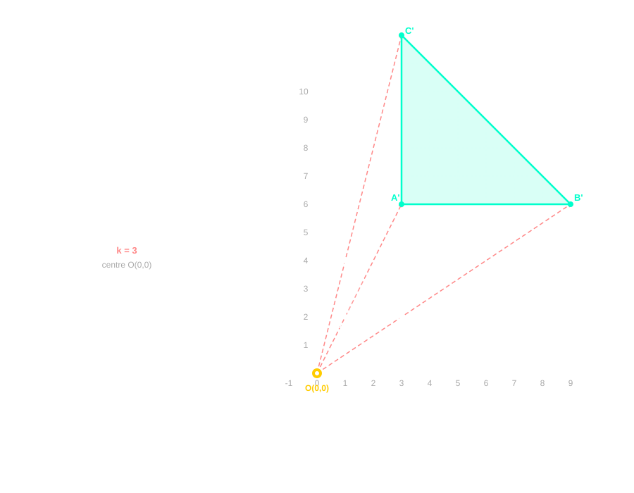
Describing an Enlargement with Positive Scale Factor:
To fully describe an enlargement you must state:
1. That it is an enlargement.
2. The scale factor (e.g. scale factor 3).
3. The centre of enlargement as coordinates (e.g. centre (0, 0)).
Negative Scale Factor
When the scale factor k < 0, the image appears on the opposite side of the centre of enlargement from the object. The image is also inverted (upside down and back to front relative to the object).
This means the centre of enlargement lies between the object and the image, not outside both of them as with a positive scale factor.
Key deductions for a negative scale factor:
• The image is on the opposite side of the centre from the object.
• The image is inverted (rotated 180° relative to the object).
• The centre lies between object and image on every connecting ray.
• The size ratio is |k| : 1. This means a scale factor of −2 makes the image twice as large, inverted.
To find the image vertex when given a negative scale factor k and centre O:
- Draw a ray from the object vertex through the centre O and continue it on the other side.
- Measure the distance from O to the object vertex.
- Multiply that distance by |k| and mark the image vertex on the opposite side of O.
Example 2: Triangle PQR has vertices P(2, 1), Q(4, 1) and R(2, 3). Enlarge it by scale factor −2, centre O(1, 1). Find the image coordinates.
Solution:
Image vertex = k × (object vertex − O) + O, where k = −2, O = (1,1).
P(2,1):
−2 × (2−1, 1−1) + (1,1)
= −2 × (1,0) + (1,1)
= (−2,0) + (1,1)
= P'(−1, 1)
Q(4,1):
−2 × (4−1, 1−1) + (1,1)
= −2 × (3,0) + (1,1)
= (−6,0) + (1,1)
= Q'(−5, 1)
R(2,3):
−2 × (2−1, 3−1) + (1,1)
= −2 × (1,2) + (1,1)
= (−2,−4) + (1,1)
= R'(−1, −3)
Answer: Image vertices: P'(−1, 1), Q'(−5, 1), R'(−1, −3).
The image is inverted and twice as large, with the centre O(1,1) lying between object and image on every ray.
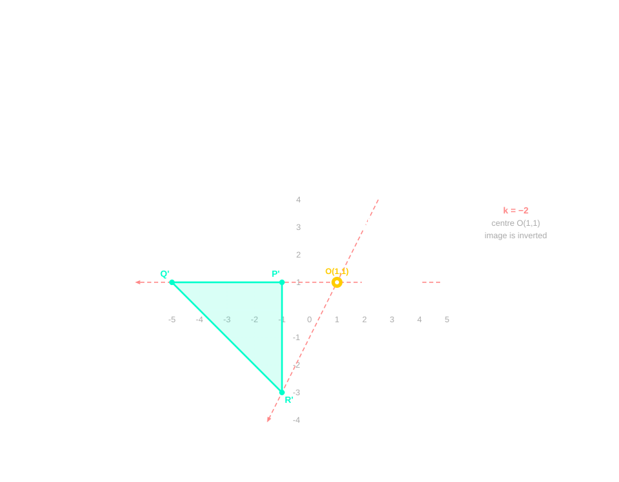
Notice how the image triangle P'Q'R' is inverted; it is a "flipped" version of PQR, and the centre O(1, 1) lies between the object and image on each ray.
Describing an Enlargement with Negative Scale Factor:
1. State that it is an enlargement.
2. Give the scale factor including the negative sign (e.g. scale factor −2).
3. State the centre of enlargement as coordinates.
Fractional Scale Factor
A fractional scale factor is any scale factor where |k| < 1 (for example, ½, ⅓, or 0.25). When |k| < 1, the image is smaller than the object. The shape is reduced, not enlarged in the everyday sense.
Key deductions for a fractional scale factor:
• The image is smaller than the object.
• If the fractional scale factor is positive, the image is on the same side of the centre as the object.
• If the fractional scale factor is negative, the image is on the opposite side of the centre (inverted and smaller).
• The centre still lies outside both shapes when the scale factor is a positive fraction.
Useful relationship: If the image is the object under scale factor k, then the object is the image under scale factor 1/k.
Positive Fractional Scale Factor
Example 3: Triangle ABC has vertices A(−2, 2), B(4, 2) and C(−2, 6). Enlarge it by scale factor ½, centre O(0, 0). Find the image coordinates.
Solution:
Since O = (0,0): image vertex = ½ × object vertex.
A(−2, 2) → A'(½ × −2, ½ × 2) = A'(−1, 1)
B(4, 2) → B'(½ × 4, ½ × 2) = B'(2, 1)
C(−2, 6) → C'(½ × −2, ½ × 6) = C'(−1, 3)
Answer: Image vertices: A'(−1, 1), B'(2, 1), C'(−1, 3).
Each side of the image is half the corresponding side of the object. The image is closer to the centre than the object.
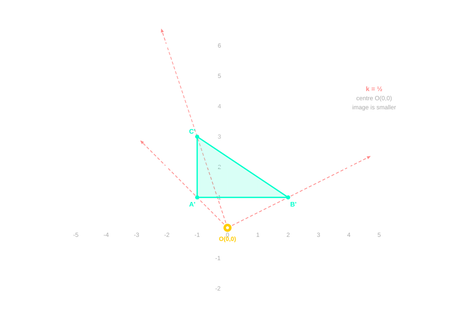
Notice that the image lies between the centre O and the object. The rays from O pass through the image vertices before reaching the object vertices. This is a defining feature of a positive fractional scale factor.
Negative Fractional Scale Factor
A negative fractional scale factor combines both effects: the image is smaller than the object (because |k| < 1) and it is inverted and on the opposite side of the centre (because k is negative). The centre of enlargement lies between the object and image, just as with any negative scale factor.
Example 4: Triangle PQR has vertices P(−4, 2), Q(2, 2) and R(−4, 6). Enlarge it by scale factor −½, centre O(0, 0). Find the image coordinates.
Solution:
Use the formula: image vertex = k × (object vertex − O) + O. Since O = (0, 0): image vertex = −½ × object vertex.
P(−4, 2) → P'(−½ × −4, −½ × 2) = P'(2, −1)
Q(2, 2) → Q'(−½ × 2, −½ × 2) = Q'(−1, −1)
R(−4, 6) → R'(−½ × −4, −½ × 6) = R'(2, −3)
Answer: Image vertices: P'(2, −1), Q'(−1, −1), R'(2, −3).
The image is half the size of the object, inverted, and sits on the opposite side of O from the object. The centre O lies between the object and image on every ray.
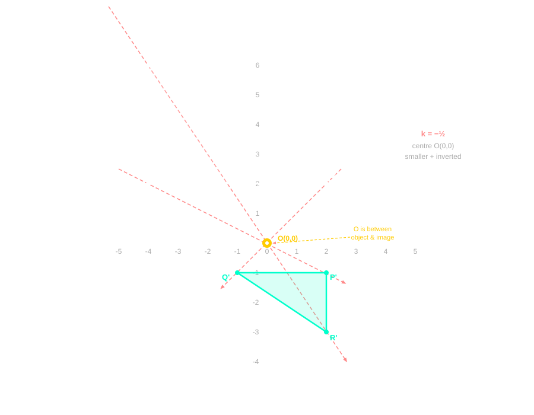
Compare this carefully with the positive scale factor of ½ above. The image is the same size in both cases. But with k = −½, the image is inverted and appears on the opposite side of O.
Scale Factor Quick Reference:
• k > 1: image larger, same side of O, same orientation as object.
• 0 < k < 1: image smaller, same side of O, same orientation; image lies between O and object.
• k < −1: image larger, opposite side of O, inverted.
• −1 < k < 0: image smaller, opposite side of O, inverted; image lies between O and object.
In all cases: all lines through corresponding vertices pass through the centre of enlargement.
Shear
A shear is a transformation that slides every point of a shape parallel to a fixed line called the invariant line. Points on the invariant line do not move. Every other point is displaced by an amount proportional to its distance from the invariant line. The shape changes appearance. It is "slanted" but its area is preserved.
Key Properties of a Shear:
• All points on the invariant line remain fixed (do not move).
• Every other point moves parallel to the invariant line.
• The distance a point moves is proportional to its perpendicular distance from the invariant line.
• The area of the shape is unchanged.
• The shape is not congruent to the original (angles and some lengths change), but it has the same area.
The Shear Factor
The shear factor (k) tells you how far a point moves for each unit of perpendicular distance from the invariant line. Specifically:
- A positive shear factor displaces points in the positive direction along the invariant line axis.
- A negative shear factor displaces points in the negative direction.
- The larger the magnitude of k, the more the shape is slanted.
Shear with the x-axis as Invariant Line
When the x-axis is the invariant line, every point (x, y) is mapped as follows:
(x, y) → (x + ky, y)
The y-coordinate is unchanged (points stay at the same height). The x-coordinate shifts by k × y.
Points on the x-axis have y = 0, so their x-coordinate is unchanged. They are invariant, as expected. Points further from the x-axis (larger |y|) shift more.
Positive Shear, x-axis Invariant
Square ABCD has vertices A(0, 0), B(2, 0), C(2, 2) and D(0, 2). Apply a shear with shear factor k = 2 and the x-axis as the invariant line. Find the image coordinates.
Solution:
Rule: (x, y) → (x + 2y, y)
A(0, 0) → (0 + 2×0, 0) = A'(0, 0) (on invariant line, does not move)
B(2, 0) → (2 + 2×0, 0) = B'(2, 0) (on invariant line, does not move)
C(2, 2) → (2 + 2×2, 2) = C'(6, 2)
D(0, 2) → (0 + 2×2, 2) = D'(4, 2)
Answer: A'(0, 0), B'(2, 0), C'(6, 2), D'(4, 2).
A and B are on the x-axis so they do not move. C and D are 2 units above the x-axis, so each shifts 2 × 2 = 4 units to the right.
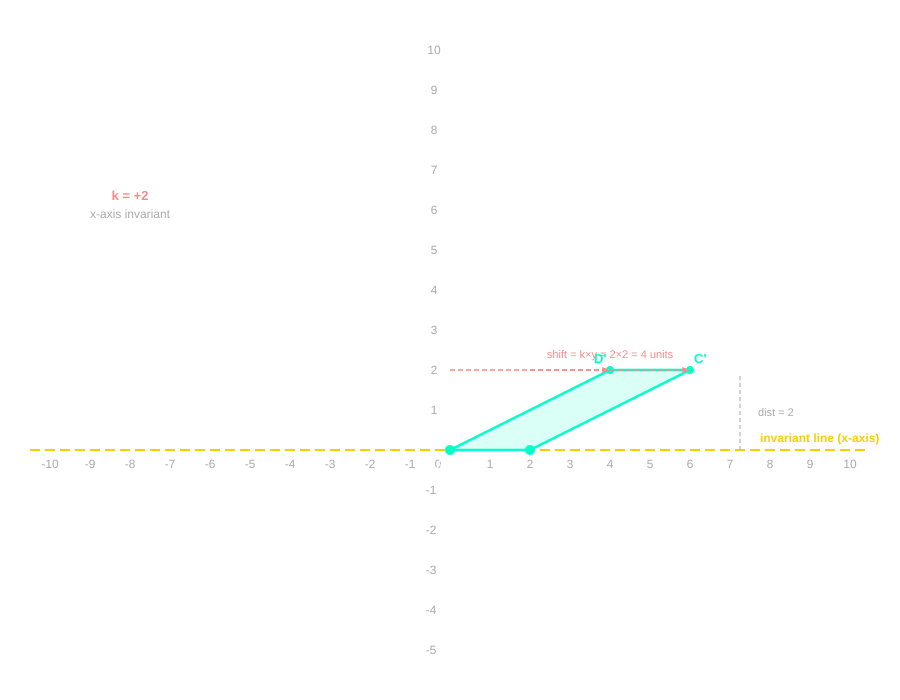
Notice that the bottom edge AB (which lies on the invariant x-axis) does not move. The top edge DC slides 4 units to the right because those points are 2 units above the invariant line and k = 2. The square becomes a parallelogram, but its area is unchanged.
Shear with the y-axis as Invariant Line
When the y-axis is the invariant line, every point (x, y) is mapped as follows:
(x, y) → (x, y + kx)
The x-coordinate is unchanged. The y-coordinate shifts by k × x.
Points on the y-axis have x = 0, so their y-coordinate does not change, they are invariant. Points further from the y-axis (larger |x|) shift more in the y-direction.
Negative Shear, y-axis Invariant
Triangle ABC has vertices A(0, 0), B(0, 3) and C(2, 1). Apply a shear with shear factor k = −1 and the y-axis as the invariant line. Find the image coordinates.
Solution:
Rule: (x, y) → (x, y + (−1)x) = (x, y − x)
A(0, 0) → (0, 0 − 0) = A'(0, 0) (on invariant line, does not move)
B(0, 3) → (0, 3 − 0) = B'(0, 3) (on invariant line, does not move)
C(2, 1) → (2, 1 − 2) = C'(2, −1)
Answer: A'(0, 0), B'(0, 3), C'(2, −1).
A and B are on the y-axis so they do not move. C is 2 units from the y-axis, so it shifts by −1 × 2 = −2 units downward.
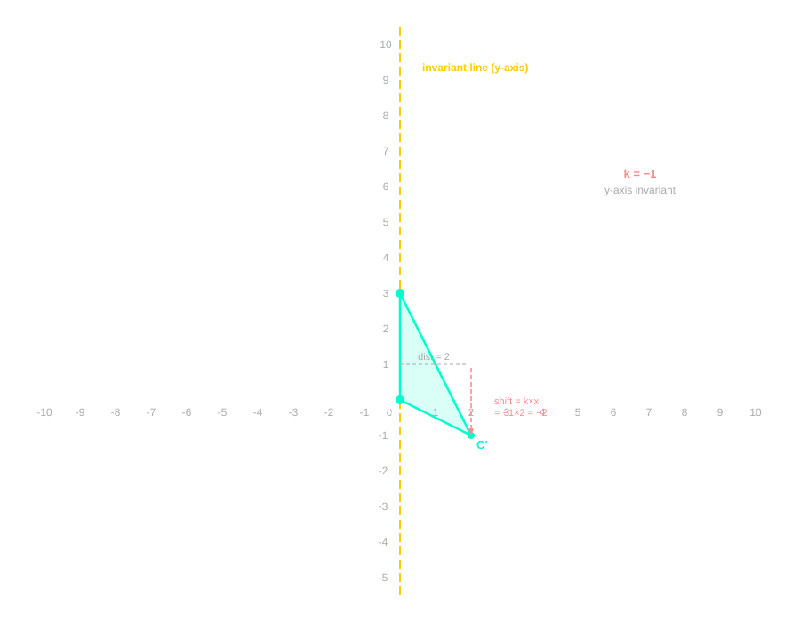
Here the negative shear factor means C moves downward (in the negative y-direction) rather than upward. A and B sit on the invariant y-axis and stay fixed. The triangle is slanted in the opposite direction compared to a positive shear.
Finding the Invariant Line and Shear Factor
When you are given an object and its image and must identify the shear, follow these steps:
- Find the invariant line: look for the set of points that have not moved. Join each object vertex to its corresponding image vertex. These joining lines are all parallel to each other and parallel to the invariant line. The invariant line passes through any points that did not move.
-
Find the shear factor: choose any point that did move.
Measure its perpendicular distance d from the invariant line, and the distance s it moved
parallel to the invariant line. Then:
k = s ÷ dUse a negative sign if the point moved in the negative direction along the invariant line axis.
Finding the Shear Factor from a Diagram
The diagram below shows triangle ABC and its image A'B'C' after a shear with the x-axis as the invariant line. A(0, 0) and B(3, 0) are unchanged. C(1, 2) has moved to C'(5, 2). Find the shear factor.
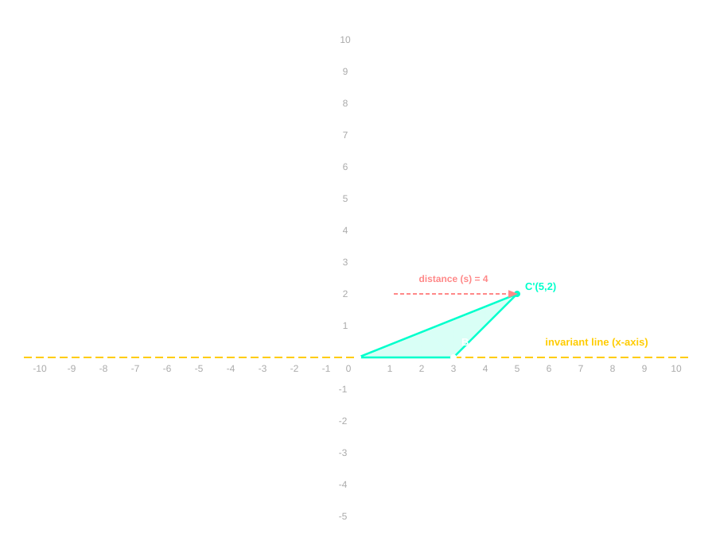
Solution:
Perpendicular distance of C from x-axis: d = 2
Distance C moved parallel to x-axis: from x = 1 to x = 5, so s = 4
Shear factor: k = s ÷ d = 4 ÷ 2 = k = 2
Check: Using the rule (x, y) → (x + 2y, y): C(1, 2) → (1 + 4, 2) = C'(5, 2)
Describing a Shear Fully
To describe a shear fully you must state:
1. That it is a shear.
2. The invariant line (e.g. the x-axis, the y-axis, or the line y = 2).
3. The shear factor including the sign (e.g. shear factor 2, or shear factor −1).
Shear with a Non-Axis Invariant Line
The invariant line does not have to be a coordinate axis. It can be any straight line, such as y = 1 or x = 2. The same principles apply: points on the line are fixed, and every other point moves parallel to the line by an amount proportional to its perpendicular distance from it.
Example 4: Triangle PQR has vertices P(1, 2), Q(4, 2) and R(1, 4). Apply a shear with invariant line y = 2 and shear factor k = −1. Find the image coordinates.
Solution:
The invariant line is y = 2. Each point's perpendicular distance from y = 2 is (y − 2). The shear shifts each point horizontally (parallel to y = 2) by k × (y − 2).
Rule: (x, y) → (x + k(y − 2), y) = (x − (y − 2), y) = (x − y + 2, y)
P(1, 2): distance from y=2 is 0 → P'(1, 2) (on invariant line — does not move)
Q(4, 2): distance from y=2 is 0 → Q'(4, 2) (on invariant line — does not move)
R(1, 4): distance from y=2 is 2; shift = −1×2 = −2 → x moves from 1 to −1: R'(−1, 4)
Answer: P'(1, 2), Q'(4, 2), R'(−1, 4).
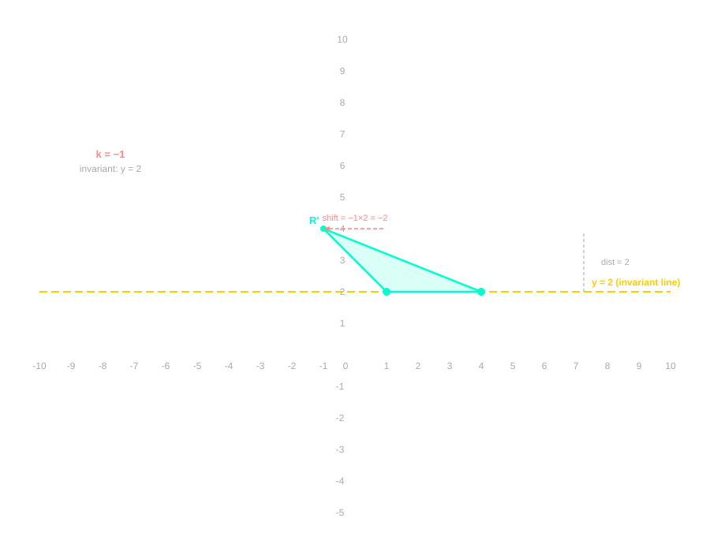
P and Q lie exactly on the invariant line y = 2, so they do not move. R is 2 units above the invariant line. With k = −1, it shifts 2 units to the left.
Area is Preserved Under Shear
A key property of shear is that the area of the shape does not change. You can verify this using the original object and its image in this section:
Verification (First Example):
Area of square ABCD = base × height = 2 × 2 = 4 square units
Area of parallelogram A'B'C'D' = base × height = 2 × 2 = 4 square units
The base AB = 2 units and the perpendicular height = 2 units remain unchanged after the shear, so the area is preserved.
Shear Summary:
• Invariant line: every point on it stays fixed.
• Shear direction: always parallel to the invariant line.
• Shear factor k: displacement = k × perpendicular distance from invariant line.
• k > 0: points shift in the positive direction along the invariant line axis.
• k < 0: points shift in the negative direction.
• Area is always preserved because the shape is distorted but not resized.
• To find k from a diagram: k = (distance moved parallel to invariant line) ÷ (perpendicular distance from invariant line).
Stretch
A stretch is a transformation that moves every point of a shape perpendicular to a fixed line called the invariant line. Points on the invariant line do not move. Every other point is displaced by an amount proportional to its distance from the invariant line. The shape is extended or compressed in one direction, changing its proportions. Unlike a shear, the area is not preserved.
Key Properties of a Stretch:
• All points on the invariant line remain fixed (do not move).
• Every other point moves perpendicular to the invariant line.
• The distance a point moves is proportional to its perpendicular distance from the invariant line.
• The area of the shape is multiplied by the absolute value of the stretch factor (|k|).
• The shape is not congruent to the original (angles and lengths change), and its area changes unless |k| = 1.
The Stretch Factor
The stretch factor (k) tells you how much a point's perpendicular distance from the invariant line changes. Specifically:
- A positive stretch factor moves points to the same side of the invariant line.
- A negative stretch factor moves points to the opposite side of the invariant line (it reflects as it stretches).
- If |k| > 1, the shape is extended away from the invariant line.
- If 0 < |k| < 1, the shape is compressed towards the invariant line.
Stretch with the x-axis as Invariant Line
When the x-axis is the invariant line, every point (x, y) is mapped as follows:
(x, y) → (x, k × y)
The x-coordinate is unchanged. The y-coordinate is multiplied by k (perpendicular distance from x-axis).
Points on the x-axis have y = 0, so they are invariant. Points further from the x-axis (larger |y|) are stretched more.
Positive Stretch, x-axis Invariant
Square ABCD has vertices A(0, 0), B(2, 0), C(2, 2) and D(0, 2). Apply a stretch with stretch factor k = 2 and the x-axis as the invariant line. Find the image coordinates.
Solution:
Rule: (x, y) → (x, 2 × y)
A(0, 0) → (0, 2 × 0) = A'(0, 0) (on invariant line, does not move)
B(2, 0) → (2, 2 × 0) = B'(2, 0) (on invariant line, does not move)
C(2, 2) → (2, 2 × 2) = C'(2, 4)
D(0, 2) → (0, 2 × 2) = D'(0, 4)
Answer: A'(0, 0), B'(2, 0), C'(2, 4), D'(0, 4).
A and B are on the x-axis so they do not move. C and D are 2 units above the x-axis, so their y-coordinate doubles to 4. The square becomes a rectangle, stretched vertically.
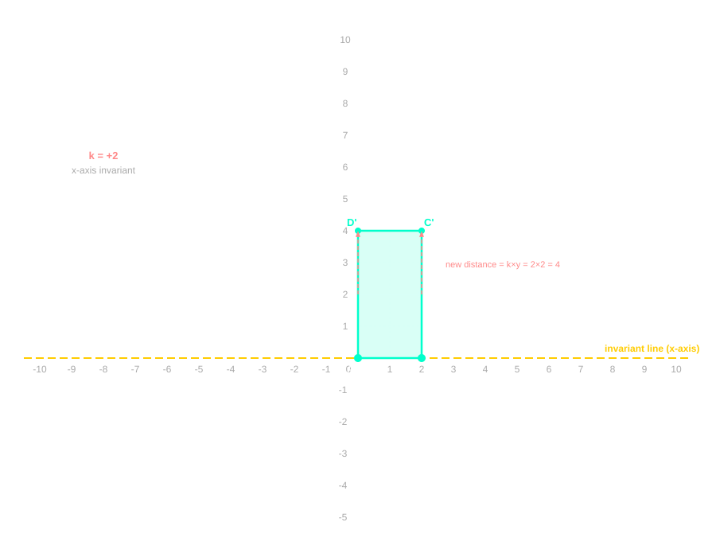
Notice that the bottom edge AB (which lies on the invariant x-axis) does not move. The top edge DC moves further away from the x-axis because those points are 2 units above the invariant line and k = 2. The square becomes a rectangle, and its area is multiplied by |k| = 2 (from 4 to 8 square units).
Stretch with the y-axis as Invariant Line
When the y-axis is the invariant line, every point (x, y) is mapped as follows:
(x, y) → (k × x, y)
The y-coordinate is unchanged. The x-coordinate is multiplied by k.
Points on the y-axis have x = 0, so they are invariant. Points further from the y-axis (larger |x|) are stretched more.
Negative Stretch, y-axis Invariant
Triangle ABC has vertices A(0, 0), B(0, 3) and C(2, 1). Apply a stretch with stretch factor k = −1 and the y-axis as the invariant line. Find the image coordinates.
Solution:
Rule: (x, y) → (−1 × x, y) = (−x, y)
A(0, 0) → (0, 0) = A'(0, 0) (on invariant line, does not move)
B(0, 3) → (0, 3) = B'(0, 3) (on invariant line, does not move)
C(2, 1) → (−2, 1) = C'(−2, 1)
Answer: A'(0, 0), B'(0, 3), C'(−2, 1).
A and B are on the y-axis so they do not move. C is 2 units from the y-axis, so its x-coordinate is multiplied by −1, reflecting it to the opposite side of the y-axis.
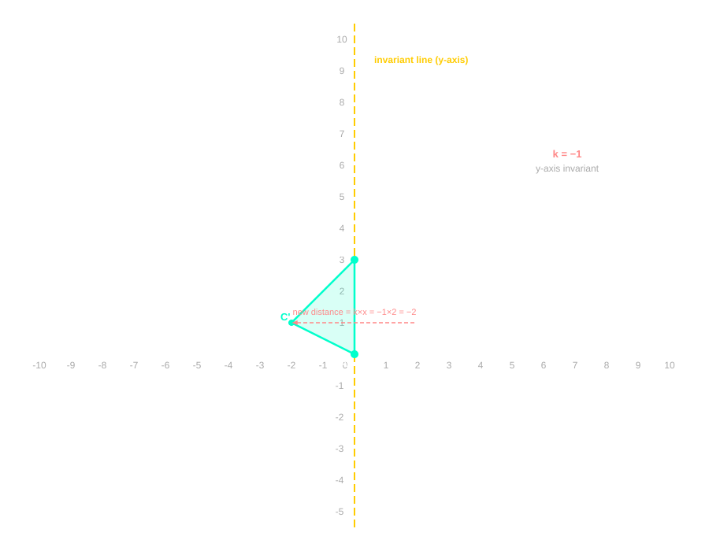
Here the negative stretch factor means C moves to the opposite side of the y-axis. A and B sit on the invariant y-axis and stay fixed. The triangle is reflected as it is stretched.
Finding the Invariant Line and Stretch Factor
When you are given an object and its image and must identify the stretch, follow these steps:
- Find the invariant line: look for the set of points that have not moved. Join each object vertex to its corresponding image vertex. These joining lines are all perpendicular to the invariant line. The invariant line passes through any points that did not move.
-
Find the stretch factor: choose any point that did move.
Measure its perpendicular distance d from the invariant line, and its new perpendicular distance d' from the invariant line. Then:
k = d' ÷ dUse a negative sign if the point moved to the opposite side of the invariant line.
Finding the Stretch Factor from a Diagram
The diagram below shows triangle ABC and its image A'B'C' after a stretch with the x-axis as the invariant line. A(0, 0) and B(3, 0) are unchanged. C(1, 2) has moved to C'(1, 6). Find the stretch factor.
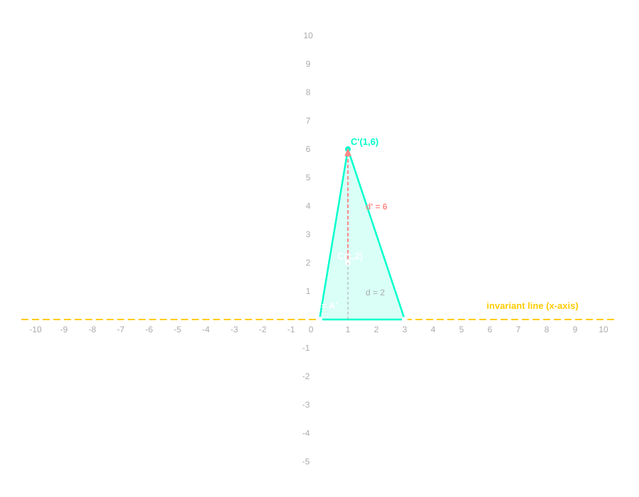
Solution:
Original perpendicular distance of C from x-axis: d = 2
New perpendicular distance of C' from x-axis: d' = 6
Stretch factor: k = d' ÷ d = 6 ÷ 2 = k = 3
Check: Using the rule (x, y) → (x, 3y): C(1, 2) → (1, 6) = C'(1, 6)
Describing a Stretch Fully
To describe a stretch fully you must state:
1. That it is a stretch.
2. The invariant line (e.g. the x-axis, the y-axis, or the line y = 2).
3. The stretch factor including the sign (e.g. stretch factor 2, or stretch factor −1).
Stretch with a Non-Axis Invariant Line
The invariant line does not have to be a coordinate axis. It can be any straight line, such as y = 1 or x = 2. The same principles apply: points on the line are fixed, and every other point moves perpendicular to the line by an amount proportional to its perpendicular distance from it.
Example 4: Triangle PQR has vertices P(1, 2), Q(4, 2) and R(1, 4). Apply a stretch with invariant line y = 2 and stretch factor k = 3. Find the image coordinates.
Solution:
The invariant line is y = 2. Each point's perpendicular distance from y = 2 is (y − 2). The stretch multiplies this distance by k and adds it to the invariant line.
Rule: (x, y) → (x, 2 + k(y − 2)) = (x, 2 + 3(y − 2)) = (x, 3y − 4)
P(1, 2): distance from y=2 is 0 → P'(1, 2) (on invariant line, does not move)
Q(4, 2): distance from y=2 is 0 → Q'(4, 2) (on invariant line, does not move)
R(1, 4): distance from y=2 is 2; new distance = 3×2 = 6 → y-coordinate = 2 + 6 = 8: R'(1, 8)
Answer: P'(1, 2), Q'(4, 2), R'(1, 8).
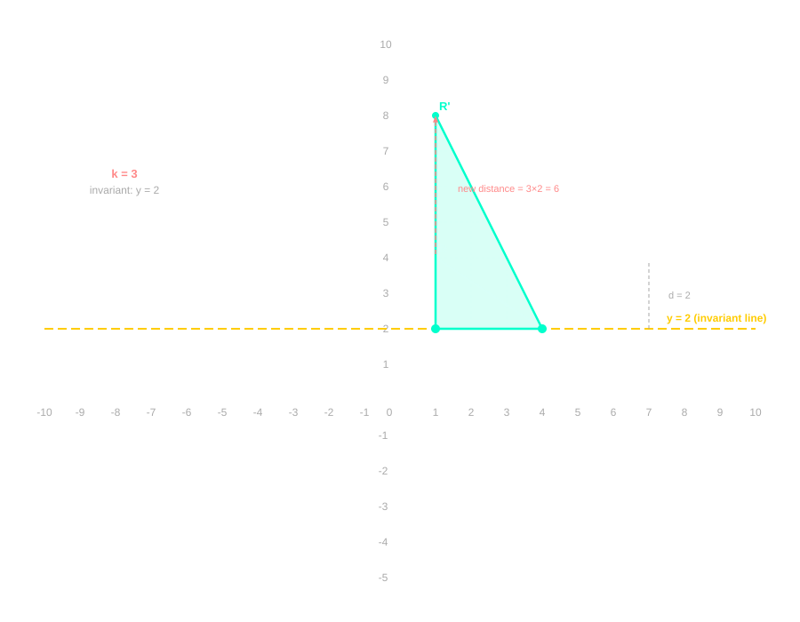
P and Q lie exactly on the invariant line y = 2, so they do not move. R is 2 units above the invariant line. With k = 3, its distance from the invariant line becomes 2 × 3 = 6 units.
Area Changes Under Stretch
A key property of stretch is that the area of the shape is multiplied by |k|. You can verify this using the original object and its image in this section:
Verification (First Example):
Area of square ABCD = base × height = 2 × 2 = 4 square units
Area of rectangle A'B'C'D' = base × height = 2 × 4 = 8 square units
The base AB = 2 units remains unchanged, but the height increases from 2 to 4 units (multiplied by k = 2), so the area is multiplied by |k| = 2.
Stretch Summary:
• Invariant line: every point on it stays fixed.
• Stretch direction: always perpendicular to the invariant line.
• Stretch factor k: new perpendicular distance = k × original perpendicular distance.
• k > 1: points move further away from the invariant line (extension).
• 0 < k < 1: points move closer to the invariant line (compression).
• k < 0: points move to the opposite side of the invariant line (reflection).
• Area is multiplied by |k|.
• To find k from a diagram: k = (new perpendicular distance) ÷ (original perpendicular distance).
Shear and stretch are pretty much the same with respect to having an invariant line and a factor k. The two key differences are that the direction of movement differs (parallel vs. perpendicular to the invariant line), and shear preserves area while stretch multiplies area by |k|.
Transforming Shapes with Matrices
Every geometric transformation (reflection, rotation, enlargement, shear, and stretch) can be represented by a 2×2 matrix. Multiplying the coordinate matrix of an object by a transformation matrix produces the coordinate matrix of the image. This gives a powerful, unified method for performing and describing any transformation algebraically.
Key Terms:
• Column matrix (coordinate matrix): each vertex is written as a 2×1 column . Multiple vertices are combined into a 2×n matrix.
• Transformation matrix (T): a 2×2 matrix that encodes the transformation.
• Image matrix: the result of T × (object matrix), giving the coordinates of the image.
• Identity matrix (I): the 2×2 matrix that leaves every point unchanged.
• Inverse matrix (T⁻¹): the matrix that reverses the transformation; T⁻¹ × T = I.
• Base vectors: the images of (1, 0) and (0, 1) under a transformation (they form the columns of the transformation matrix).
Representing Coordinates as a Matrix
Each vertex of a shape is written as a column in a matrix. For a triangle with vertices A, B, C, the object matrix is a 2×3 matrix where the first row holds all x-coordinates and the second row holds all y-coordinates:
For example, triangle ABC with A(1, 0), B(3, 0), C(1, 2) is written as:
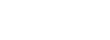
.The image coordinates are read the same way from the resulting image matrix after multiplication.
The Identity Matrix
The identity matrix I is the transformation matrix that maps every point to itself. No transformation occurs. It is:
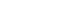
Multiplying any coordinate matrix by I returns the same coordinates:
Multiplying to Get the Image Matrix
To find the image of a shape under a transformation matrix T:
- Write the object's vertices as a 2×n coordinate matrix.
- Multiply: Image matrix = T × Object matrix.
- Read the image coordinates from the columns of the result.
- Plot both the object and the image on a coordinate grid.
- Identify and describe the transformation.
For a 2 × 2 matrix T and a 2 × 3 object matrix, the multiplication works column by column:
Example 1: Applying a Transformation Matrix
Triangle ABC has vertices A(1, 0), B(3, 0) and C(1, 2). Apply the transformation matrix . Find the image coordinates, plot both shapes and describe the transformation.
Step 1: Write the object matrix:
Step 2: Multiply T × M:
Step 3: Read image coordinates:
A'(0, 1) B'(0, 3) C'(−2, 1)
Step 4: Describe the transformation:
The matrix is a rotation of 90° anticlockwise about the origin.
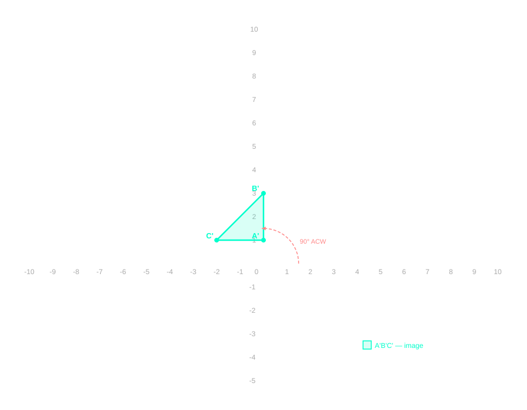
Base Vectors and the Transformation Matrix
The base vectors are the unit vectors along the axes: e₁ = (1, 0) along the x-axis and e₂ = (0, 1) along the y-axis.
The transformation matrix T is built directly from where these base vectors are mapped:
The Base Vector Method:
1. Find where (1, 0) maps to under the transformation → this becomes the first column of T.
2. Find where (0, 1) maps to under the transformation → this becomes the second column of T.
Example: Under a 90° anticlockwise rotation: (1, 0) → (0, 1) and (0, 1) → (−1, 0), so T = .
Finding the Transformation Matrix from Object and Image
Given the object matrix M and the image matrix M', the transformation matrix T satisfies T × M = M'. If M is a square invertible matrix:
For a 2×2 matrix , the inverse is:
where ad − bc is the determinant of M. The inverse only exists when the determinant ≠ 0.
Example 2: Finding the Transformation Matrix
Triangle ABC has vertices A(2, 0), B(2, 2) and C(0, 2). Its image after a transformation has vertices A'(0, 2), B'(−2, 2) and C'(−2, 0). Find the transformation matrix T.
Solution using base vectors:
Use two vertices that span both directions. Take A(2,0) → A'(0,2) and C(0,2) → C'(−2,0).
A = 2×(1,0) + 0×(0,1). Since A→A', the image of 2e₁ is (0,2), so e₁ = (1,0) maps to (0,1). First column of T: (0, 1).
C = 0×(1,0) + 2×(0,1). Since C→C', the image of 2e₂ is (−2,0), so e₂ = (0,1) maps to (−1,0). Second column of T: (−1, 0).
Therefore:
Verify:
Image vertices: A'(0,2) B'(−2,2) C'(−2,0)
This is a rotation of 90° anticlockwise about the origin.
Finding the Object from the Transformation Matrix and Image
If you know T and the image matrix M', you can recover the object matrix using the inverse:
Example 3: Finding the Object Matrix
The image of a triangle after transformation has vertices A'(2, 4), B'(6, 4) and C'(2, 8). Find the original object vertices.
Step 1: Find T⁻¹:
det(T) = (2)(2) − (0)(0) = 4
Step 2: Multiply T⁻¹ × M':
Answer: Original vertices: A(1, 2), B(3, 2), C(1, 4).
This is an enlargement by scale factor 2 centred at the origin, the transformation matrix doubles every coordinate.
Standard Transformation Matrices
Every standard transformation has a recognisable matrix. Learning these matrices, and the features that identify each one, allows you to both perform and describe any transformation from the matrix alone.
Reflection Matrices
| Mirror line | Matrix T | Key feature |
|---|---|---|
| x-axis (y = 0) | Bottom-right entry is −1; top-left is 1; off-diagonal are 0 | |
| y-axis (x = 0) | Top-left entry is −1; bottom-right is 1; off-diagonal are 0 | |
| y = x | Diagonal entries are 0; off-diagonal entries are both 1 | |
| y = −x | Diagonal entries are 0; off-diagonal entries are both −1 |
Rotation Matrices (about the origin)
| Rotation | Matrix T | Key feature |
|---|---|---|
| 90° anticlockwise | Diagonal 0s; top-right −1; bottom-left +1 | |
| 90° clockwise | Diagonal 0s; top-right +1; bottom-left −1 | |
| 180° | Both diagonal entries −1; off-diagonal 0 | |
| 270° anticlockwise (= 90° CW) | Same as 90° clockwise |
Enlargement, Stretch and Shear Matrices
| Transformation | Matrix T | Key feature |
|---|---|---|
| Enlargement, scale factor k, centre O | Both diagonal entries equal k; off-diagonal 0. det = k². | |
| Stretch parallel to x-axis, factor k | Top-left k, bottom-right 1; off-diagonal 0 | |
| Stretch parallel to y-axis, factor k | Top-left 1, bottom-right k; off-diagonal 0 | |
| Shear, x-axis invariant, factor k | Diagonal entries both 1; top-right k; bottom-left 0. det = 1. | |
| Shear, y-axis invariant, factor k | Diagonal entries both 1; bottom-left k; top-right 0. det = 1. |
Area and the Determinant
The determinant of the transformation matrix tells you how areas change:
- For reflections and rotations: det = ±1, so area is unchanged.
- For enlargement by scale factor k: det = k², so area is multiplied by k².
- For shear: det = 1, so area is unchanged.
- For stretch by factors p (x) and q (y): det = pq, so area is multiplied by pq.
Identifying a transformation from its matrix:
• Both diagonal entries equal, off-diagonal 0, det = k² → Enlargement scale factor k.
• Diagonal entries 0, off-diagonal ±1 → Reflection (check sign pattern for mirror line).
• Diagonal entries 0, off-diagonal +1 and −1 → Rotation (check which is positive for direction).
• Both diagonal entries 1, exactly one off-diagonal entry non-zero → Shear.
• Diagonal entries different and non-zero, off-diagonal 0, det ≠ 1 → Stretch.
• det = 0 → the transformation collapses the shape to a line or point (not invertible).